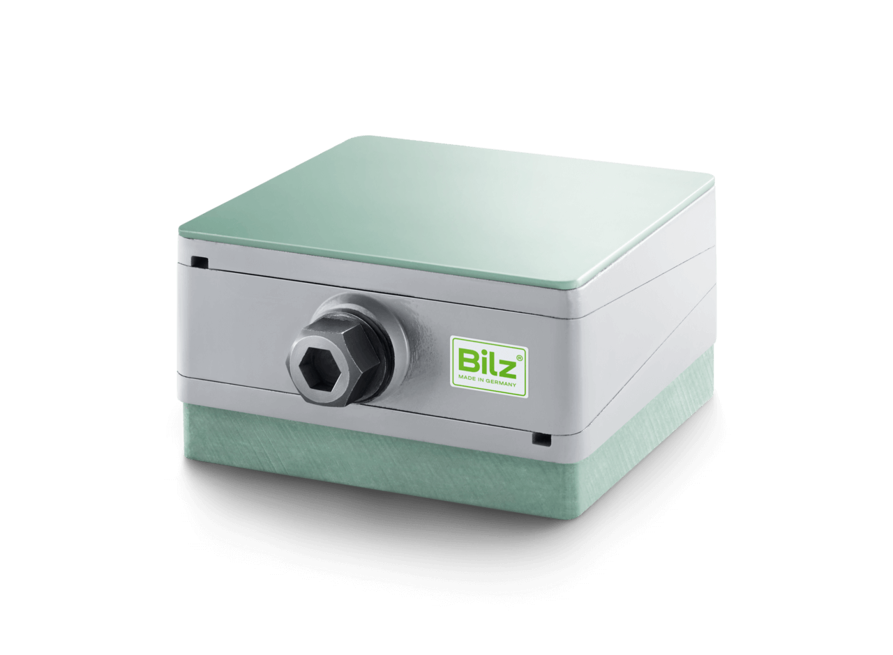
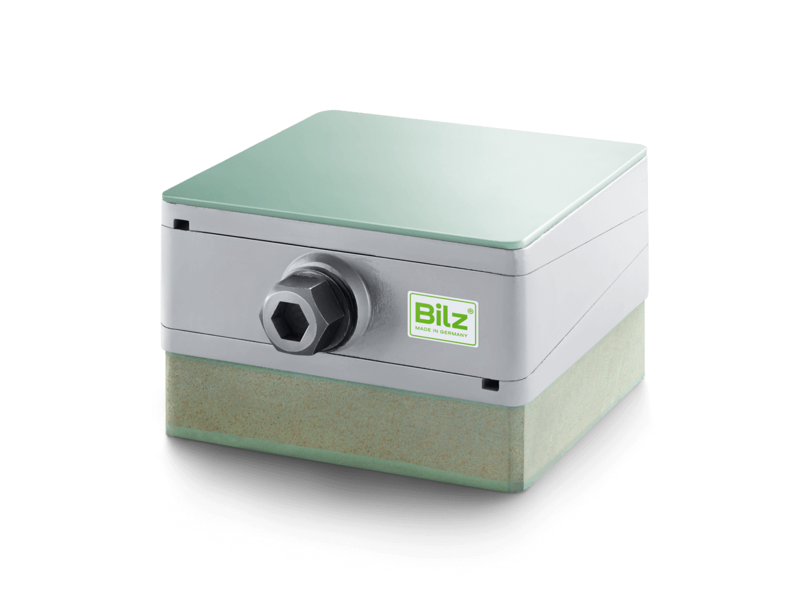
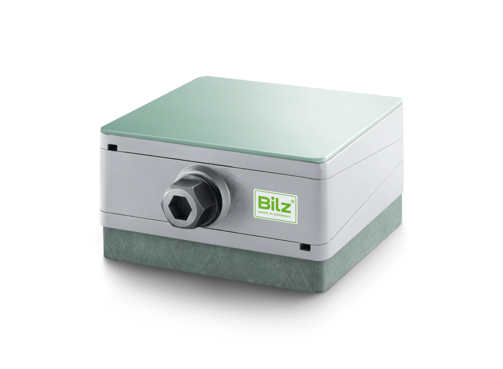

Wyposażenie
Warianty wyposażenia klinów
Każdy klin dostępny jest z różnym wyposażeniem dolnym — od montażu bezpośredniego po pełną wibroizolację.

Wyposażenie A
Montaż bezpośredni. Klin na stalowej płycie podstawy — do montażu na twardej, równej posadzce.

Wyposażenie B
Z matą antywibracyjną. Dodatkowa izolacja od drgań dzięki podkładce gumowej pod klinem.

Wyposażenie C
Z elementem elastomerowym. Podwyższona wibroizolacja przy zachowaniu kompaktowych wymiarów.

Wyposażenie D
Ze stopą poziomującą Bilz. Pełna wibroizolacja — łączy precyzję klina z izolacją drgań stopy maszynowej.

Wyposażenie E
Z kotwą fundamentową. Do montażu na fundamencie — pewne mocowanie i precyzyjne poziomowanie.

Wyposażenie F
Ze stopą i kotwą. Maksymalna stabilność — kombinacja kotwy fundamentowej z wibroizolującą stopą maszynową.